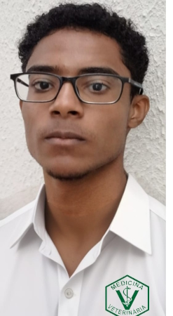
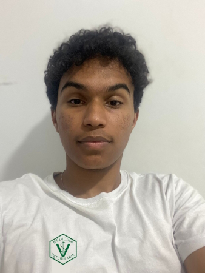
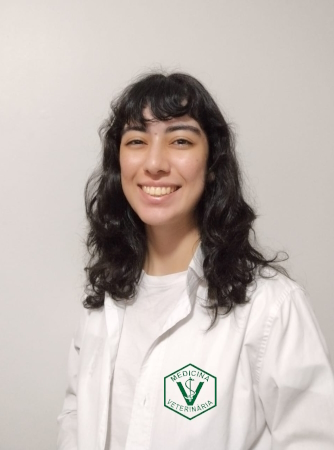
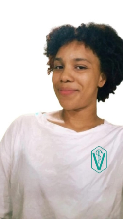
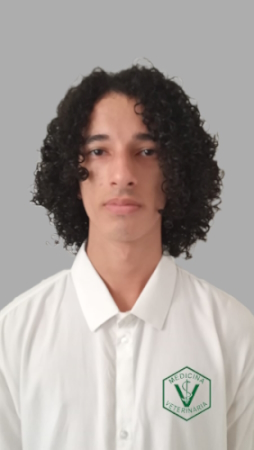
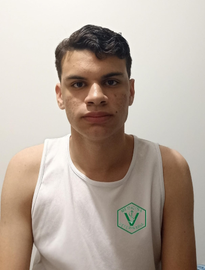

SIGNACLE Vet Documentando
conteúdos acessíveis em Libras.
E se a gente pudesse ter uma nuvem com vários conteúdos acessíveis em Libras?! Vídeos com vários sinais traduzindo palavras dos mais variados contextos?! Essa é a proposta do repositório SIGNACLE Vet: um ambiente online armazenando conteúdos em Libras sobre vários temas para auxiliar na aprendizagem visual de surdos e ouvintes usuários de língua de sinais.
MEDICINA VETERINÁRIA

Doenças e Sintomas
Doenças e sintomas mais comuns na medicina veterinária. Muito utilizados na jornada do médico veterinário. Você vai poder ver sinais como "tumor", "inflamação", e vários outros.
Anatomia Animal
Palavras comuns na anatomia de animais domésticos, desde alguns osso, até orgãos importantes. Muito utilizado no estudo das formas e estruturas que compõem o corpo dos animais. Você vai poder ver sinais como "esôfago", "vértebras", e vários outros.

Termos Comuns
Termos médicos muito utilizados em vários contextos e situações que podem ser úteis para muitos médicos veterinários. Você vai poder ver sinais como "vacina", "castração", e vários outros.
Orientador:

Professor Saulo Xavier
Integrantes:
Italo Rian
Pedro Lemos
Maria Clara Barbosa
Anna Victória
Alysson Leonardo
Daniel Lopes
Andreia de Oliveira
MUITO PRAZER, SOMOS ESTUDANTES EXTENSIONISTAS DE ADS.
Bem-vindos ao mundo da veterinária inclusiva e acessível! Este projeto nasceu da união entre a medicina veterinária e a linguagem de sinais, com o objetivo de ampliar o acesso à informação para a comunidade surda. Através da Libras (Língua Brasileira de Sinais), buscamos facilitar a compreensão sobre cuidados com os animais, tornando esse conhecimento acessível a todos. Acreditamos que a inclusão é essencial em todas as áreas e que o aprendizado sobre o bem-estar animal deve estar disponível para qualquer pessoa, independentemente de suas capacidades auditivas.
Somos estudantes do curso de Análise e Desenvolvimento de Sistemas (ADS), orientados pelo Prof. Dr. Saulo Xavier, especialista em Tradução e Libras. A ideia para o projeto surgiu após conhecermos uma pesquisa pioneira que desenvolveu um glossário de termos veterinários em Libras. Inspirados por essa tese, tivemos a ideia de transformar esse conteúdo em um site dinâmico e interativo, que pudesse atender não apenas estudantes e profissionais da área veterinária, mas também qualquer pessoa interessada em aprender sobre os cuidados com os animais, de forma acessível e inclusiva.
Nosso site oferece uma ampla gama de recursos educacionais para facilitar o acesso a informações vitais sobre a saúde animal. Entre os conteúdos disponíveis, você encontrará lições interativas, vídeos explicativos, quizzes para testar o conhecimento, e um dicionário de sinais em Libras voltado especificamente para a terminologia veterinária. Nosso objetivo é garantir que todos, surdos e ouvintes, possam adquirir conhecimento sobre cuidados veterinários de maneira simples, clara e eficiente.
Desde o início, o projeto foi pensado com um forte foco na acessibilidade. Sabemos que a inclusão digital é uma questão essencial, por isso garantimos que o site funcione bem em diversos dispositivos, como computadores, tablets e smartphones. Além disso, incluímos compatibilidade com tecnologias assistivas, como leitores de tela, para garantir que pessoas com diferentes tipos de deficiência possam navegar e utilizar o site sem dificuldades. Nosso compromisso é criar um ambiente digital que atenda às necessidades de todos os usuários.
O processo de desenvolvimento passou por várias fases, desde o design inicial até os testes de usabilidade. Cada etapa foi cuidadosamente planejada para que o site oferecesse uma experiência amigável, inclusiva e, ao mesmo tempo, educativa. Recebemos feedbacks valiosos de professores, colegas e especialistas, que nos ajudaram a aprimorar o conteúdo e a interface do site. O resultado é um protótipo robusto, com potencial para ser uma ferramenta de aprendizagem essencial no campo da veterinária.
Nosso glossário digital não é apenas uma ferramenta para o aprendizado de termos técnicos, mas um recurso que promove a inclusão social e a igualdade de acesso ao conhecimento. Acreditamos que, ao tornar o aprendizado mais acessível, estamos contribuindo para a criação de um futuro mais inclusivo, onde todos possam ter as mesmas oportunidades de crescer e aprender, independentemente de suas habilidades.
Com o lançamento do nosso glossário online, esperamos não apenas facilitar o acesso ao conhecimento sobre cuidados veterinários, mas também inspirar outras iniciativas que unam tecnologia e inclusão. Queremos que este projeto sirva como exemplo de como é possível integrar diferentes áreas do conhecimento para promover uma educação mais inclusiva e acessível para todos.
Esperamos que o Signacle possa colaborar com ações que contribuam para que o ambiente virtual seja cada vez mais acessível para todos, independentemente de sua capacidade auditiva.